응용지질기사 (2004-03-07 기출문제)
1과목: 암석학 및 광물학
1. 소금 결정은 면심공간격자를 가지고 있다. 소금의 단위포함량은?
- 1
- 2
- 3
- 4
(정답률: 80%)

2. 다음 중 변성암으로 분류되는 암석은?
- 섬장암
- 유문암
- 규암
- 이회암
(정답률: 75%)
3. 수은의 광석으로 쓰이는 광물은 어느 것인가?
- 공작석
- 돌로마이트
- 명반석
- 진사
(정답률: 59%)
4. 화성암 중 중성암의 SiO2 중량(wt%) 범위는?
- 66% 이상
- 66 ~ 52%
- 52 ~ 45%
- 45% 이하
(정답률: 94%)
5. 셰일이 접촉변성작용을 받아서 만들어지는 변성암은?
- 천매암
- 혼펠스
- 규암
- 대리암
(정답률: 알수없음)
6. 다음 중 교대작용에 의해 생성된 것으로 보기 어려운 것은?
- 육면체상 석영
- 규화목
- 능면체상 섬아연석
- 팔면체상 형석
(정답률: 42%)
7. 다음 사항 중 고용체로 산출되지 않는 광물은?
- 사장석
- 석영
- 감람석
- 석류석
(정답률: 37%)
8. 관입암상(sill)에 대한 설명 중 옳은 것은?
- 변성암 특히 편마암 지역에서 주로 관찰된다.
- 주로 고각도로 다른 암석을 관입한다.
- 주로 현무암으로 구성된다.
- 주로 퇴적암의 층리면에 평행한 상태로 관찰된다.
(정답률: 50%)
9. 구면 투영에서 C축에 평행한 대원은 스테레오 투영에서는 무엇으로 투영되는가?
- 원과 직선
- 호
- 원
- 직선
(정답률: 73%)
10. 어떤 지역의 퇴적암을 조사하여 다음과 같은 내용을 알았다. 이 암석의 퇴적장소는?
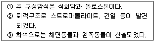
- 사막
- 하천
- 호수
- 조간대
(정답률: 알수없음)
11. 사암에서 발견되는 중광물 중에서 모암이 고변성도의 변성암임을 강력히 시사해 주는 것은?
- 저어콘, 석류석
- 십자석, 규선석
- 황옥, 홍주석
- 남정석, 인회석
(정답률: 알수없음)
12. 광물의 점착성에 대한 성질이 서로 맞게 짝지어진 것은?
- 가절성 - 석영
- 연성 - 자연동
- 전성 - 운모
- 요곡성 - 정장석
(정답률: 44%)
13. 다음 중 광물명에 해당되는 것은?
- 규석
- 도석
- 대리석
- 엽납석
(정답률: 70%)
14. 광물감정에 이용되는 mineralight의 설명에 맞는 것은?
- 적외선에 의한 광물의 인광색 식별
- 자외선에 의한 광물의 형광색 식별
- 음극선에 의한 광물의 인광색 식별
- X선에 의한 광물의 형광색 식별
(정답률: 59%)
15. 다음 광물 중 풍화작용에 대한 저항력이 가장 약한 광물은?
- 감람석
- 백운모
- 흑운모
- 석영
(정답률: 75%)
16. 다음 중 화산암의 구조에 해당되지 않는 것은?
- 유상구조(flow structure)
- 반상구조(porphyritic structure)
- 다공상구조(vesicular structure)
- 호상구조(banded structure)
(정답률: 54%)
17. 변성암에서 엽리구조가 발달하는 주 원인은 무엇인가?
- 암석에 미치는 온도
- 암석에 미치는 횡압력
- 암석에 미치는 인장력
- 암석에 미치는 화학성분
(정답률: 67%)
18. 지각을 구성하는 원소들 중에서 산소(O) 다음으로 무게 백분율(wt%)이 높은 것은?
- 철(Fe)
- 알루미늄(Al)
- 규소(Si)
- 마그네슘(Mg)
(정답률: 82%)
19. 다음 중 쪼개짐(벽개면)이 없는 광물은?
- 운모
- 정장석
- 방해석
- 석영
(정답률: 46%)
20. 상하로 인접한 두 지층 사이에 커다란 시간적 간격을 나타내 주는 퇴적구조는?
- 사층리
- 건열
- 연흔
- 부정합
(정답률: 86%)
2과목: 구조지질학
21. 다음 중 Karst지형과 가장 관계가 깊은 것은?
- 백운암
- 규암
- 용암
- 석회암
(정답률: 95%)
22. 단진자의 고유주기와 관련된 아래 설명 중 맞지 않는 것은?
- 고유주기는 진자 길이의 제곱근에 비례한다.
- 고유주기는 중력가속도의 제곱근에 반비례한다.
- 고유주기는 진자 무게의 제곱근에 반비례한다.
- 고유주기가 길수록 장주기 진동을 충실히 기록할 수 있다.
(정답률: 알수없음)
23. 다음 중 판구조론(plate tectonics)을 뒷받침하는 증거가 아닌 것은?
- 운석의 충돌과 공룡의 멸종
- 고지자기와 지열류량
- 지향사와 습곡산맥
- 해저지형과 대륙붕
(정답률: 알수없음)
24. 부조화 습곡(disharmonic fold)은 다음의 어떤 경우에 형성되는가?
- 굳은 지층의 발달
- 약한 지층의 발달
- 암질이 서로 다른 층들로 이루어진 지층이 발달
- 암질이 서로 비슷한 층들로 이루어진 지층이 발달
(정답률: 90%)
25. 다음 중 경사단층의 설명으로 맞는 것은?
- 단층의 주향이 지층의 경사방향과 평행한 단층
- 지층의 주향과 45° 내외로 교차하는 단층
- 단층의 주향이 지층의 주향에 평행한 단층
- 지괴가 상하운동을 일으키지 않고 미끄러진 단층
(정답률: 42%)
26. 다음 중 맨틀에서 존재하는 광물은?
- 석영
- 운모류
- 감람석
- 장석류
(정답률: 85%)
27. 다음 그림과 같은 단층구조에서 인장절리가 en echelon array로 발달하였다면 이 경우를 변형도 타원(strain ellips)으로 설명한 것 중 맞는 것은?
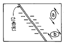
- a의 경우이다.
- b의 경우이다.
- a, b의 두가지 경우이다.
- a, b의 두가지 경우가 아닌 또 다른 경우이다.
(정답률: 84%)
28. 다음 설명 중 맞는 것은?
- 서로 암석의 물성이 다른 두 층이 압력을 받아 늘어날 때 상대적으로 강인한 층이 소세지 모양으로 끊어지며, 한 방향성을 갖고 있는 것을 부딘구조(Boudinage structure)라 한다.
- 암석의 선구조는 조암광물들이 그들의 연장된 방향을 서로 직각으로 가질 때에 나타난다.
- 지각 변동으로 생긴 최초의 평행구조와는 달리 2차적으로 생긴 층상 평행구조가 발견되면 이를 선구조라 한다.
- 변성암에 바늘 모양의 광물이나 주상의 광물이 한방향으로 배열되면 이의 특징을 선구조라 하며 선구조는 엽리의 발달이 없는 암석에는 나타날 수 없다.
(정답률: 85%)
29. 지구내부 상태를 설명하는 내용 중 틀린 것은?
- 층상구조를 이룬다.
- 밀도는 전부 동일하다.
- 지열은 내부로 갈수록 높아진다.
- 지하 보상면에 있어서의 압력은 동일하다.
(정답률: 85%)
30. 다음 중 두께가 가장 얇은 것은?
- 대륙지각(육지지각)
- 대양지각(해양지각)
- 맨틀
- 외핵
(정답률: 알수없음)
31. 다음에서 수평층을 표시하는 기호는?
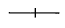
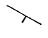
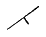
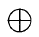
(정답률: 알수없음)
32. 건조한 지역에서 가장 특징적인 지형으로서 기반암이 침식된 평활한 완경사면으로서 얇게 또는 불연속적으로 충적토가 덮여있는 지역은?
- 인젤베르크
- 페디먼트
- 바하다
- 플라야
(정답률: 알수없음)
33. 층리면이 습곡되어 있을 때 축면엽리와 지층면이 만나서 형성된 지질구조는?
- 신장된 선구조(elongation lineation)
- 교선 선구조 혹은 교차 선구조(intersection lineation)
- 파랑습곡 선구조(creunlation lineation)
- 부딘 선구조(boudinage lineation)
(정답률: 85%)
34. 화석밀집부의 산상에 대한 용어로서 화석 밀집부가 도옴상이나 렌즈상이며 그 대부분이 정착성의 생물로 되어 있는 것은 무엇인가?
- Bioherm
- Cupula
- Decken
- Biostrome
(정답률: 알수없음)
35. 습곡의 축면이 거의 수평에 가까운 것은?
- 직립습곡
- 경사습곡
- 역전습곡
- 횡와습곡
(정답률: 65%)
36. Drag fold는 다음 중 어떤 구조와 수반되어 나타나는가?
- 분지
- 절리
- 단층
- 선구조
(정답률: 62%)
37. 지자기연대를 최근부터 순서대로 나열한 것은?
- Brunhes Epoch, Matsuyama Epoch, Gauss Epoch, Gilbert Epoch
- Matsuyama Epoch, Gauss Epoch, Brunhes Epoch, Gilbert Epoch
- Gauss Epoch, Gilbert Epoch, Brunhes Epoch, Matsuyama Epoch
- Brunhes Epoch, Gauss Epoch, Gilbert Epoch, Matsuyama Epoch
(정답률: 27%)
38. 변환단층(transform fault)에서 비교적 천발지진이 많이 일어나는데 이 부분은 어느 곳인가?
- 해령과 해령 사이의 변환단층 부분
- 변환단층 전역에 연한 부분
- 해령과 변환단층의 교차부에 국한된 부분
- 해령부분에 국한된 부분
(정답률: 62%)
39. 다음 중 야외에서 단층을 구분하는 증거로 사용되지 않은 것은?
- 구지(gouge)
- 단층각력
- 압쇄암
- 채터마크(chattermark)
(정답률: 74%)
40. 어느 지역의 지질조사를 실시하는 중에 두 지층 사이의 부정합 관계를 알아내려고 한다. 다음 조사사항 중 가장 부적합한 것은?
- 두 지층 사이에서 기저역암을 찾으려고 한다.
- 두 지층의 주향과 경사를 면밀히 측정하여 비교한다.
- 두 지층속에 들어있는 화석을 조사하여 비교한다.
- 두 지층을 구성하는 입자의 크기를 분석하여 비교한다.
(정답률: 73%)
3과목: 탐사공학
41. 다음 자력계 중 총자력만을 측정하는 것은?
- Schmidt(tortion balence)
- flux-gate
- proton-precession
- SQUID
(정답률: 36%)
42. 다음 중 평균 대자율이 가장 높은 암석은?
- 사암
- 셰일
- 점판암
- 현무암
(정답률: 47%)
43. 햄머차트(hammer chart)를 이용하는 중력보정은?
- 지형보정
- 부게르보정
- 위도보정
- 고도보정
(정답률: 60%)
44. 다음 중 속도가 느리고 파장이 길며 먼 거리를 진행하여도 큰 진폭을 유지하여 지진 재해의 대부분의 원인이 되는 탄성파는?
- 압축파
- Love 파
- S 파
- P 파
(정답률: 알수없음)
45. 진자의 길이가 100 cm인 단진자를 사용하여 진자의 주기를 측정한 결과 2초였다면 중력은?
- 약 981 gal
- 약 983 gal
- 약 986 gal
- 약 989 gal
(정답률: 42%)
46. 다음과 같은 수평 2층구조의 주시곡선에 대한 설명으로 옳은 것은 어느 것인가?
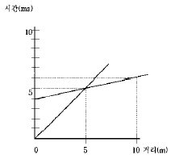
- 상부층의 속도가 하부층의 속도보다 크다.
- 굴절파가 도달되지 않는 거리는 음원으로부터 5 m이다.
- 굴절파가 처음으로 초동으로 나타나는 거리는 5 m이다.
- 하부층의 속도는 500 m/sec 이다.
(정답률: 46%)
47. 전자탐사에서 사용주파수(f)와 침투심도(d)의 관계를 올바르게 나타낸 것은? (단, ∝는 비례한다는 표시임)
- d ∝ f2
- d ∝ f
- d ∝ 1/ √f
- d ∝ 1 / f
(정답률: 55%)
48. 수평 2층에 대한 탄성파 탐사에서 굴절파를 잡을 수 있는 첫 수진점(受振点)과 발파점과의 거리는 무엇에 의해 결정되는가?
- 상, 하부층의 속도
- 상부층 속도와 하부층까지의 심도
- 상부층에서 하부층까지의 심도
- 상, 하부층 속도와 하부층까지의 심도
(정답률: 64%)
49. 상부층의 속도와 밀도가 각각 V1=1000m/s, ρ1=2g/cm3 이고, 하부층의 속도와 밀도가 V2=4000m/s, ρ2=2.5g/cm3 인 수평 2층구조에서의 입사파 에너지에 대한 반사파 에너지의 비는 얼마인가?
- 0.11
- 0.33
- 0.44
- 0.67
(정답률: 17%)
50. 점 반사원(point reflector)이 존재할 경우 GPR 탐사 단면상에 나타나는 반사 양상은?
- 정확하게 점 반사원의 위치에서만 반사 기록이 나타난다.
- 점 반사원을 중심으로 포물선 형태의 회절 양상을 보인다.
- 점 반사원을 중심으로 원형의 반사 양상을 보인다.
- 점 반사원은 GPR 단면상에 나타나지 않는다.
(정답률: 77%)
51. 국내의 지하투과 레이다 탐사(GPR)에서 사용되는 주파수 대역은 다음 중 어느 것인가?
- 15 KHz∼25 KHz
- 10 Hz∼1 KHz
- 10 MHz∼1 GHz
- 10 KHz∼1 MHz
(정답률: 75%)
52. 광상의 종류에 따른 지시원소 중 지시원소가 Hg이었다면 광상의 종류는?
- Pb - Zn - Ag 광상
- 반암동 광상
- Au - Ag 광상
- Sn - W - Be 광상
(정답률: 54%)
53. 잔류자기에 대한 설명 중 틀린 것은?
- 잔류자기의 강도는 열변성 작용을 받은 변성암류에서 낮고 주로 퇴적암류에서 높다.
- 일정한 온도 하에서 짧은 시간동안 존재하다가 없어지는 외부자기장에 의하여 암석이 잔류자기를 얻는 현상을 등온잔류자화라고 한다.
- 자성물질이 높은 온도로부터 큐리온도를 거쳐 서서히 식어갈 때 외부자기장에 의해서 강하고 안정된 잔류자기를 얻게 되는 현상을 열잔류자화라고 한다.
- 등온 잔류자화가 누적되어 나타나는 현상으로 암석이 약한 외부 자기장일지라도 오랫동안 영향을 받아서 잔류자기를 띠게 되는 현상을 퇴적 점성잔류자화라고 한다.
(정답률: 60%)
54. 실제의 지질 환경 하에서 가장 중요한 의미를 가지는 γ선의 작용은 무엇인가?
- 쌍 생산
- 쌍 소멸
- 콤프턴(Compton) 효과
- 광전 효과
(정답률: 70%)
55. 신틸레이션 미터(scintillation meter)에 사용하는 결정의 성분은?
- 아르곤(Ar) 가스
- 라듐(Ra)
- 소듐 아이오다이드(NaI)
- 소듐 나이트레이트(NaN)
(정답률: 77%)
56. 물리탐사에서 널리 수행되는 역산(inversion)에 대한 가장 올바른 설명은?
- 주어진 모델변수(지하 물성분포)로부터 이론자료를 얻는 과정이다.
- 현장자료로부터 모델변수를 얻는 과정이다.
- 모델변수와 현장자료 사이의 상관관계를 얻는 과정이다.
- 모델변수의 변화에 대한 이론자료의 변화량을 계산하는 과정이다.
(정답률: 알수없음)
57. 지하에서 발생하는 전위는 그 원인에 따라 크게 네 가지로 나눌 수 있는데, 다음 중 발생원인의 성격이 나머지 셋과 다른 것은?
- 유동 전위
- 확산 전위
- 셰일 전위
- 광화 전위
(정답률: 37%)
58. 다음 중 일차 지화학분산(一次 地化學分散)과 관계가 없는 것은?
- 변성과정
- 마그마 결정과정
- 열수활동
- 생물활동
(정답률: 31%)
59. 노두(露頭)에 양질의 황동광(黃銅鑛)이 보인다. 다음 어느 탐사방법이 제일 적절한가?
- 방사능탐사
- 탄성파탐사
- 중력탐사
- 전기탐사
(정답률: 알수없음)
60. 탄성파 탐사에서 횡파의 전파속도(Vs)에 대한 관계식을 바르게 나타낸 것은? (단, G : 강성률, ρ : 밀도, E : 영률, ν : 포아송비, k : 체적탄성률)
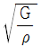
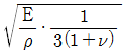
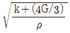
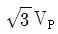
(정답률: 54%)
4과목: 지질공학
61. 진동을 받은 토사의 강도가 현저히 저하되는 현상은?
- 액상화
- 고결작용
- 용해작용
- 차별침식
(정답률: 62%)
62. 우물을 설치할 때 스크린(Screen)을 설치할 필요가 없는 지층은?
- 점토층
- 중립질 사층
- 자갈층
- 전석층
(정답률: 39%)
63. 다음의 지반개량 공법중 고결의 원리를 이용한 것은?
- 샌드 드레인 공법
- 웰포인트 공법
- 팩 드레인 공법
- 생석회말뚝공법
(정답률: 67%)
64. 암반 불연속면의 거칠기(roughness)조사에 대한 내용이 아닌 것은?
- 거칠기는 10m 길이의 불연속면에 대한 거친정도를 나타내는 것이다.
- 단면 측정기(Profile gauge)로도 측정할 수 있다.
- 변성암의 경우에는 주향방향과 경사방향에 대해 다른 값을 보인다.
- JRC(Joint Roughness Coefficient)가 클수록 굴곡이 심하다는 것을 나타낸다.
(정답률: 72%)
65. 터널굴착시 기계굴착에 적합하지 않는 지질조건과 관계없는 것은?
- 굳기의 변화가 심한 암반
- 바닥면이 진흙화되기 쉬운 지반
- 용수가 없는 지반
- 단층이나 파쇄대가 발달한 지반
(정답률: 64%)
66. 현무암질 모암에서 풍화된 토양의 비중을 설명한 것 중 옳은 것은?
- 유색광물이 많이 들어 있을수록 비중이 크다.
- 유색광물이 많이 들어 있을수록 비중이 작다.
- 유기물질의 함량이 증가하면 비중이 커진다.
- 유기물질의 함량이 증가해도 비중의 변화는 없다.
(정답률: 67%)
67. Darcy 법칙은 물의 흐름이 층류일 때 유효하고, 층류 여부는 Reynolds number를 이용하여 판별한다. Darcy 법칙이 유효한 Reynolds number의 상한 값은?
- 0.1
- 1.0
- 10.0
- 100.0
(정답률: 71%)
68. 절리면의 주향과 경사가 각각 N40˚ E, 40˚ SE 로 표현되었다. 이를 dip / dip direction으로 환산하면?
- 40 / 40
- 40 / 130
- 50 / 40
- 50 / 130
(정답률: 82%)
69. 단면적 30㎝2, 길이 20㎝의 시료에 대한 정수위 투수시험을 했더니 40㎝의 수두에서 120초 동안에 72㏄가 유출되었다. 이 시료의 투수계수는?
- 1.5 × 10-2㎝/sec
- 1 × 10-2㎝/sec
- 1 × 10-3㎝/sec
- 1.5 × 10-3㎝/sec
(정답률: 54%)
70. 암석의 공극률에 직접적으로 영향을 주는 요소가 아닌 것은?
- 입자 모양
- 입자의 배열상태
- 암석의 성인
- 고결 정도
(정답률: 77%)
71. 암반의 기본 RMR 값이 75인 터널에서 불연속면이 작업막장면에서 작업장 쪽으로 30도 정도 경사져 있다. 터널에서 불연속면의 방향에 대한 보정 값은 다음 표와 같다. 이때 이 터널의 RMR 값은 얼마인가?
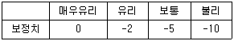
- 65
- 70
- 73
- 75
(정답률: 37%)
72. 사면의 경사각 ψf, 파괴면의 경사각 ψp, 파괴면의 마찰각 ø 인 암반 사면에서 평면 파괴가 일어날 조건으로 알맞은 것은?
- ψf ＞ ψp ＞ ø
- ψp ＞ ψf ＞ ø
- ψp ＞ ø ＞ ψf
- ψf ＞ ø ＞ ψp
(정답률: 77%)
73. 다음 그라우팅공법에 사용되는 주입재 중 용수대책 등 순간적인 고결이 요구되는 장소에 가장 효과적인 것은?
- 시멘트계
- 점토계
- 물유리계
- 우레탄계
(정답률: 82%)
74. 지반의 수직단면상 토사와 기반암의 공학적 경계면에 해당하는 것으로 기초공사를 위한 지반조사시 필수적인 항목은?
- Rockhead
- Drift
- Karst
- Colluvium
(정답률: 60%)
75. 어떤 흙의 상대밀도에 관한 설명으로 틀린 것은?
- 매우 느슨한 상태로 존재하는 경우 상대밀도는 0에 가깝다.
- 매우 촘촘한 상태로 존재하는 경우 상대밀도는 1에 가깝다.
- 상대밀도가 낮은 흙에 진동을 가하면 다짐이 많이 발생한다.
- 상대밀도를 계산하기 위해서는 자연상태에 있는 흙의 간극비만 알면 된다.
(정답률: 82%)
76. 유선망에 대한 설명으로 틀린 것은?
- 등수두선과 유선은 항상 직각이다.
- 인접한 두 유선 사이를 흐르는 유량은 일정하다.
- 유선 사이의 거리가 넓어지면 유속이 빨라진다.
- 인접한 두 등수두선 사이의 수두손실은 동일하다.
(정답률: 알수없음)
77. 경제적으로 개발할 수 있을 정도의 다량의 지하수를 포함하고 있는 암석 또는 지층을 무엇이라 하는가?
- 대수층
- 투수층
- 파쇄대
- 지하수면
(정답률: 73%)
78. RMR과 Q 시스템 분류법의 비교 중에서 틀린 것은?
- RMR은 굴착막장의 자립시간을 제시하고 있다.
- Q 법은 지보의 필요성을 공동의 크기와 관련하여 판정한다.
- Q 분류법이 RMR 분류법보다 지보대책이 보다 다양하다.
- 두 방법 모두 불연속면의 방향성에 대한 보정이 필요하다.
(정답률: 50%)
79. 시추를 통하여 불연속면의 방향성 자료를 얻을 수 있는 시험은?
- 시추코아 관찰
- 공내재하시험
- 텔레뷰시험
- 시추공간 탄성파탐사
(정답률: 60%)
80. NATM 터널시공시 터널의 단면, 폭 변화 등을 측정하는 계측은?
- 갱내관찰조사
- 천단침하계측
- 내공변위계측
- 록볼트 인발시험
(정답률: 60%)
5과목: 광상학
81. 시멘트의 원료인 석회석은 주로 어느 지층에 속하는가?
- 경상계
- 조선계
- 평안계
- 대동계
(정답률: 알수없음)
82. 형석 중에 흔히 함유되어 있는 유체포유물(liquid inclusion)은 광상 연구에 어떻게 이용되는가?
- 생성온도 측정
- 압력 측정
- 격자구조 해석
- 미량 분석
(정답률: 알수없음)
83. 규조토 광상의 생성 원인으로 가장 가까운 것은?
- 풍화잔류 광상
- 열수교대 광상
- 유기적 침전 광상
- 화학적 침전 광상
(정답률: 알수없음)
84. 다음 암석중에서 Ni의 풍화잔류 광상을 이루는데 가장 적절한 것은?
- 휘록암
- 섬록암
- 섬장암
- 화강암
(정답률: 42%)
85. 선캠브리아기의 퇴적광상으로 가장 규모가 큰 광상은?
- 동광상
- 연· 아연광상
- 철광상
- 중석광상
(정답률: 50%)
86. 다음은 광물과 그 용도 관계를 연결한 것이다. 맞는 것은?
- 휘수연석 - 시멘트
- 방연석 - 비료
- 구아노 - 제련용
- 휘안석 - 합금
(정답률: 알수없음)
87. 다음 구조중 공동 충진구조를 나타내는 것이 아닌 것은?
- 정동구조
- 모장구조
- 각력상구조
- 동심호상구조
(정답률: 20%)
88. 현미경 사진의 광석 조직에서 관찰되는 현상은?
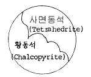
- 변질작용
- 변성작용
- 분화작용
- 교대작용
(정답률: 60%)
89. 열수광상의 형태에 따른 구분 중 맞지 않는 것은?
- Mineral vein
- Cavity filling deposits
- Stockwork deposits
- Residual deposits
(정답률: 27%)
90. 셰일층이 광역변성 작용을 받았을 경우 광물 생성온도(Formation temperature)가 낮은 것부터 표시한 것 중 맞는 것은?
- 녹니석 - 흑운모 - 석류석 - 십자석 - 규선석
- 흑운모 - 백운모 - 정장석 - 사장석 - 석영
- 고령토 - 녹니석 - 녹염석 - 석영 - 정장석
- 녹니석 - 흑운모 - 각섬석 - 휘석 - 감람석
(정답률: 50%)
91. 염기성 화성암에서 기대하기 어려운 성분은?
- 니켈
- 철
- 크롬
- 베릴륨
(정답률: 30%)
92. 한국식 금광맥이라 하는 것은 다음 중 어느 것에 해당하는가?
- 최천열수형 광맥
- 천열수형 광맥
- 중내지 심열수형 광맥
- 기성 광맥
(정답률: 63%)
93. 다음은 가상(pseudomorph)에서 각 광물의 변질 관계를 나타낸 것이다. 서로 맞지 않는 것은?
- 황철석 → 침철석
- 이극석 → 방연석
- 적동석 → 공작석
- 형석 → 방해석
(정답률: 알수없음)
94. 합금(合金) 석영맥이 지표에 노출되어 적갈색으로 된 것은 무엇인가?
- 곳산(gossan)
- 보난사(bonanza)
- 키이스라겔(kieslager)
- 모암(cap rock)
(정답률: 87%)
95. 다음 중 칼데라(caldera)의 생성원인은?
- 화산폭발시의 분화구이다.
- 화산폭발과 관계없이 지층의 함락으로 일어난다.
- 화산폭발 후 화구의 함락으로 일어난다.
- 화산폭발 후 분화구에 물이 고여 생성된다.
(정답률: 37%)
96. 다음의 우리나라 주요 금속 광산의 광산명과 생산되는 금속이 일치되는 것은?
- 상동 - W, 양양 - Cu, 연화 - Fe
- 상동 - W, 양양 - Cu, 연화 - Pb, Zn
- 상동 - W, 양양 - Fe, 연화 - Pb, Zn
- 상동 - Pb, Zn, 양양 - W, 연화 - Fe
(정답률: 50%)
97. 기성광상의 대표적인 모암변질 작용은?
- 녹리석화작용
- 불석화작용
- 견운모화작용
- 그라이젠화작용
(정답률: 47%)
98. 다음에서 가장 변성의 정도가 높은 암석은?
- schist
- slate
- phyllite
- argillite
(정답률: 59%)
99. 마그마 동화작용(Assimilation)의 설명으로 맞는 것은?
- 자체에서 일어나는 현상이며 외부에서 어떤 물질의 공급이 없다.
- 기존 암석을 용융하여 처음과는 전혀 다르거나 다소 상이한 마그마를 형성한다.
- 마그마의 온도가 내려가면 각종 광물은 정출된다.
- 광물이 정출되어 잔액과 분리되는 작용이다.
(정답률: 46%)
100. 다음 광물 중 주로 알루미늄 광석으로 이용되고 있는 광물은?
- 장석
- 보옥사이트
- 납석
- 점토
(정답률: 80%)